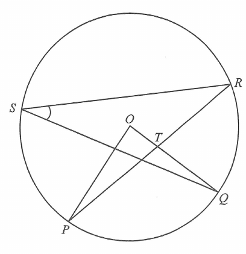

Interactive worked solution · scroll the steps to highlight the figure
Interactive Figure
Circle / radii (OP, OR)Chord PRChord QR / line OQCentre OPoint TChord PS
QUESTION
In the figure, \(O\) is the centre of the circle \(PQRS\). \(PR\) and \(OQ\) intersect at the point \(T\).
If \(\angle POT=82^\circ\) and \(\angle PTQ=104^\circ\), then \(\angle QSR=\)
A. \(22^\circ\)
B. \(27^\circ\)
C. \(30^\circ\)
D. \(49^\circ\)

Figure (original exam diagram)
💡 Hint: \(O,T,Q\) lie on the same straight line, so \(\angle POQ = \angle POT\). Then use the
isosceles triangle \(OPR\) (two radii) and the angle at the centre.
STEP 1 · Same Line collinear O, T, Q
Since \(O,\,T,\,Q\) are collinear,
\[ \angle POQ=\angle POT=82^\circ. \]
STEP 2 · Triangle \(POT\)
💡 \(T\) lies on \(OQ\), so \(PTH\) is not straight — instead use angles on a straight line at \(T\):
\[ \angle PTO=180^\circ-104^\circ=76^\circ. \]
Angle sum of \(\triangle POT\):
\[ \angle OPT=180^\circ-82^\circ-76^\circ=22^\circ. \]
STEP 3 · Isosceles \(\triangle OPR\)
\(OP=OR\) (radii of the same circle), so
\[ \angle ORP=\angle OPR=22^\circ \]
\[ \angle POR=180^\circ-2(22^\circ)=136^\circ. \]
STEP 4 · Angle at the centre
Since \(OQ\) lies inside \(\angle POR\),
\[ \angle QOR=\angle POR-\angle POQ=136^\circ-82^\circ=54^\circ. \]
STEP 5 · Angle at the circumference
The angle subtended by arc \(QR\) at the circumference is half the central angle:
\[ \angle QSR=\tfrac12\,\angle QOR=\tfrac12(54^\circ)=27^\circ. \]